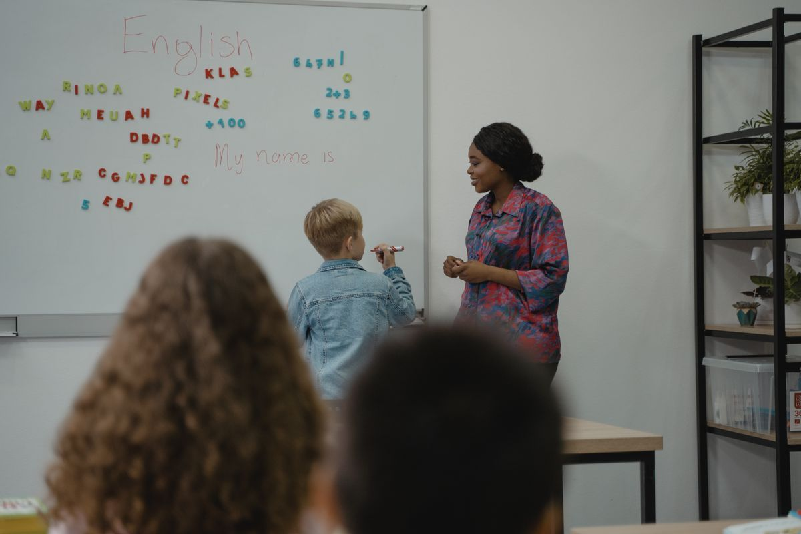
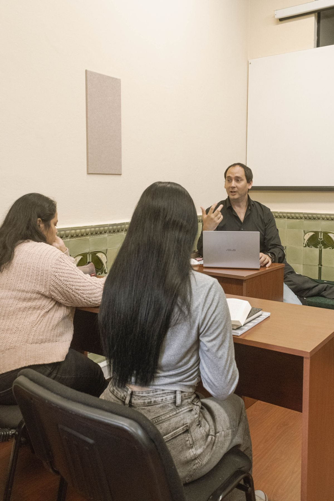
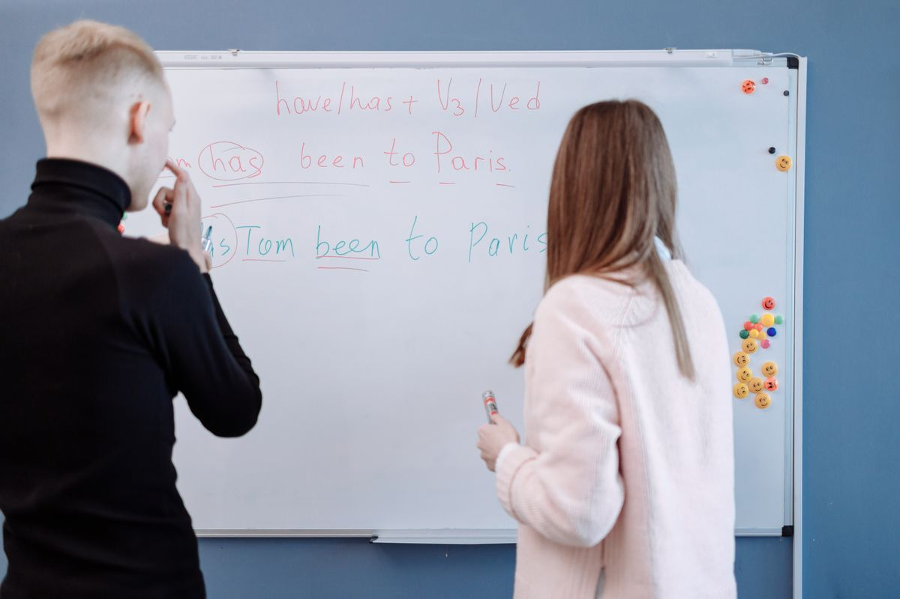

ترکی استانبولی
آموزش ترکی استانبولی از پایه تا پیشرفته؛ با تمرکز بر مکالمه روزمره، شنیدن و صحبت کردن از همان جلسههای اول.
دورههای ترکی استانبولی فرپاک برای هر هدف: یادگیری زبان برای زندگی و کار در ترکیه، یا آمادگی جدی برای آزمون TÖMER.
آموزش ترکی استانبولی از پایه تا پیشرفته؛ با تمرکز بر مکالمه روزمره، شنیدن و صحبت کردن از همان جلسههای اول.
آمادگی هدفمند برای آزمون TÖMER؛ تمرین با نمونه سؤالها و آشنایی با ساختار آزمون، برای کسانی که مدرک زبان ترکی میخواهند.

کلاس مکالمه ترکی استانبولی برای کسانی که گرامر را میدانند اما میخواهند روان و با اعتمادبهنفس صحبت کنند.
قبل از ثبتنام، سطح زبان شما تعیین میشود تا دقیقاً در کلاسی قرار بگیرید که نه برایتان ساده باشد و نه سخت.
آزمون TÖMER مدرک رسمی مهارت زبان ترکی است که دانشگاهها و مؤسسههای ترکیه از شما میخواهند. در فرپاک، مسیر آمادگی برای این آزمون از تعیین سطح شروع میشود و تا روز آزمون ادامه دارد.
سطح فعلی شما مشخص میشود و برنامه آمادگی بر اساس همان سطح چیده میشود.
با ساختار و نوع سؤالهای آزمون آشنا میشوید تا سر جلسه غافلگیر نشوید.
بخشهایی از آزمون که بیشتر زبانآموزها در آن ضعف دارند، در کلاس تمرین میشود.

فرپاک فقط ترکی استانبولی تدریس میکند؛ همین تخصص، تمرکز کلاسها را روی چیزی گذاشته که زبانآموزهای ترکی واقعاً لازم دارند.
تمرکز فرپاک فقط روی زبان ترکی است؛ از دورههای عمومی تا آمادگی آزمون TÖMER.
با تعیین سطح، کلاس مناسب خودتان را پیدا میکنید؛ نه کلاسی که برایتان ساده است، نه کلاسی که از آن عقب میمانید.
روبروی تیراژه، خیابان قموشی، خیابان بهار، پلاک ۴ — دسترسی راحت برای ساکنان غرب تهران.
فرم همین صفحه را پر کنید؛ برای تعیین سطح و هماهنگی کلاس، با شما تماس میگیریم.
یادگیری زبان یعنی حرف زدن؛ کلاسهای فرپاک با تمرین و مکالمه پیش میروند.

فرم تعیین سطح همین صفحه را پر کنید؛ دوره موردنظرتان و روز مناسبتان را مشخص کنید.
سطح زبان ترکی شما مشخص میشود تا کلاس درست را برایتان پیشنهاد کنیم.
کلاس مناسب سطح و هدف شما معرفی میشود؛ روز و ساعت کلاس با شما هماهنگ میشود.
در کلاس خودتان شرکت میکنید و یادگیری ترکی استانبولی را شروع میکنید.
فرم تعیین سطح همین صفحه را پر کنید یا با شماره ۰۲۱۴۴۲۷۵۳۹۷ تماس بگیرید. بعد از ثبت درخواست، برای هماهنگی تعیین سطح با شما تماس میگیریم.
تهران، اشرفی اصفهانی، روبروی تیراژه، خیابان قموشی، خیابان بهار، پلاک ۴.
آموزش تخصصی ترکی استانبولی، آمادگی آزمون TÖMER، کلاس مکالمه و تعیین سطح.
آزمون TÖMER مدرک رسمی مهارت زبان ترکی است که دانشگاهها و مؤسسههای ترکیه برای تحصیل و کار از زبانآموزها میخواهند.
صفحه اینستاگرام ما @farpak.turkish است.
فرم را پر کنید؛ برای تعیین سطح و هماهنگی کلاس با شما تماس میگیریم. اگر ترجیح میدهید مستقیم صحبت کنیم، تماس بگیرید:
۰۲۱ - ۴۴۲۷۵۳۹۷ واتساپ: ۰۹۱۹۲۳۴۳۴۴۵